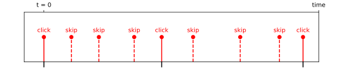

TimeTagger classes
The Time Tagger classes represent the different time-tag sources for your measurements and analysis. These objects are created by factory functions in the Time Tagger library:
- Time Tagger hardware
The
TimeTaggerrepresents a hardware device and allows access to hardware settings. To connect to a hardware Time Tagger and to get aTimeTaggerobject, usecreateTimeTagger().- Virtual Time Tagger
The
TimeTaggerVirtualallows replaying files created with theFileWriter. To create aTimeTaggerVirtualobject, usecreateTimeTaggerVirtual().- Network Time Tagger
The
TimeTaggerNetworkallows the (remote) access to a Time Tagger made available viaTimeTagger.startServer(). TheTimeTaggerNetworkobject is created withcreateTimeTaggerNetwork()which also establishes connection to the server.
General Time Tagger features
The TimeTaggerBase class defines methods and functionality present in all Time Tagger objects.
The specific classes below inherit from TimeTaggerBase.
Every measurement and virtual channel instance
requires a reference to a TimeTaggerBase object to associate with.
- class TimeTaggerBase
- setInputDelay(channel, delay)
Convenience method that calls
setDelaySoftware()if you use a Time Tagger 20 or the delay is > 2 µs, otherwisesetDelayHardware()is called.
- getInputDelay(channel)
Convenience method that returns the sum of
getDelaySoftware()andgetDelayHardware().
- setDelayHardware(channel, delay)
Note
Method is not available for the Time Tagger 20.
Set an artificial delay per channel. The delay can be positive or negative. This delay is applied onboard the Time Tagger directly after the time-to-digital conversion, so it also affects the Conditional Filter. If you exceed the maximum hardware delay range, please use
setDelaySoftware()instead.
- getDelayHardware(channel)
Note
Method is not available for the Time Tagger 20.
Returns the value of the delay applied onboard the Time Tagger in picoseconds for the specified channel.
- setDelaySoftware(channel, delay)
Set an artificial delay per channel. The delay can be positive or negative. This delay is applied on the computer, so it does not affect onboard processes such as the Conditional Filter.
- getDelaySoftware(channel)
Returns the value of the delay applied on the computer in picoseconds for the specified channel.
- setDeadtime(channel, deadtime)
Sets the dead time of a channel in picoseconds. The requested time will be rounded to the nearest multiple of the internal clock period, which is 6 ns for the Time Tagger 20, 2 ns for the Time Tagger Ultra and 1.333 ns for the Time Tagger X. The minimum dead time is one clock cycle. As the deadtime passed as an input will be altered to the rounded value, the rounded value will be returned. The maximum dead time 65535 * internal clock period, which is 393.210 µs for the Time Tagger 20, 131.070 µs for the Time Tagger Ultra and 87.380 µs for the Time Tagger X.
Note
The specified deadtime is 2.1 ns for Time Tagger Ultra and 1.5 ns for Time Tagger X. With the default setting of the hardware deadtime filter, an event arriving between the default hardware deadtime and the specified deadtime after the last event of that channel might be dropped (e.g., an event arriving between 2 ns and 2.1 ns after the last event on that channel for Time Tagger Ultra).
- getDeadtime(channel)
Returns the dead time value for the specified channel.
- getOverflows()
Returns the number of overflows (missing blocks of time tags due to limited USB data rate) that occurred since start-up or last call to
clearOverflows().- Returns:
Number of overflows
- Return type:
- getOverflowsAndClear()
Returns the number of overflows that occurred since start-up and sets them to zero (see,
clearOverflows()).- Returns:
Number of overflows
- Return type:
- clearOverflows()
Set the overflow counter to zero.
- setSoftwareClock(input_channel: int, input_frequency: float, averaging_periods: float = 1000, wait_until_locked: bool = True)
Define in software one of the input channels as the base clock for all channels. This feature sets up a software PLL and rescales all incoming time-tags according to the software clock defined. The PLL provides a new time base with “ideal clock tags” separated by exactly the defined clock_period. For measurements, you can use both, rescaled and ideal clock tags.
While the PLL is not locked, the time base of the instrument is invalid. In this case, the time-tag stream changes to the overflow mode. This means that after every call to
setSoftwareClock(), you will find overflows because the PLL starts from an unlocked state.Caution
It is often useful to apply this feature in combination with
TimeTagger.setEventDivider()on the input_channel. The values of input_frequency and averaging_periods correspond to the transferred time-tags, not to the physical frequency. Changing the divider independently after setting up the software clock may lead to a failure of the locking process. Do not add input_channel to the list of filtered channels inTimeTagger.setConditionalFilter().For the Time Tagger 20, a phase error of 200 ps needs to be considered when using the software clock.
- Parameters:
input_channel (int) – The physical channel that is used as software clock input.
input_frequency (float) – The frequency of the software clock after application of
TimeTagger.setEventDivider()(e.g. a 10 MHz clock signal with divider = 20 has input_frequency = 500 000). The value should not deviate from the real frequency by more than a few percent. Default: 10E6, for 10 MHz.averaging_periods (float) – The number of cycles to average over. The suppression of discretization noise is improved by a higher averaging_periods. If the value is too large, however, this will result in increased phase jitter due to the drift of the internal clock or the applied software clock signal. Default: 1000.
wait_until_locked (bool) – Blocks the execution until the software clock is locked. Throws an exception on locking errors. All locking log messages are filtered while this call is executed. Default: True
- disableSoftwareClock()
Disable the software clock.
- getSoftwareClockState()
Provides an object representing the current software clock state. This includes the configuration parameters as well as dynamic values generated based on the incoming signal.
- Returns:
An object that contains the current state of the software clock.
- Return type:
- getFence(alloc_fence: bool = True)
Generate a new fence object, which validates the current configuration and the current time. This fence is uploaded to the earliest pipeline stage of the Time Tagger. Waiting on this fence ensures that all hardware settings, such as trigger levels, channel registrations, etc., have propagated to the FPGA and are physically active. Synchronizes the Time Tagger internal memory so that all tags arriving after the
waitForFence()call were actually produced after thegetFence()call. ThewaitForFence()function waits until all tags, which are present at the time of the function call within the internal memory of the Time Tagger, are processed. This call might block to limit the number of active fences.
- waitForFence(fence, timeout: int = -1)
Wait for a fence in the data stream. See
getFence()for more details.
- sync(timeout: int = -1)
Ensure that all hardware settings, such as trigger levels, channel registrations, etc., have propagated to the FPGA and are physically active. Synchronizes the Time Tagger internal memory, so that all tags arriving after a sync call were actually produced after the sync call. The sync function waits until all tags, which are present at the time of the function call within the internal memory of the Time Tagger, are processed. It is equivalent to
waitForFence(getFence()).The operation of this method on the
TimeTaggerNetworkdepends on the server access mode. If theTimeTaggerNetworkis connected to the Time Tagger server started inAccessMode.Control, the synchronization will be done all way through the server and the hardware. If the Time Tagger server started inAccessMode.Listen, the client will be able to synchronize only with the server but will not synchronize with the Time Tagger Hardware. However, if a USB synchronization fence was created by the server side, the clients will also see it.See also
- getInvertedChannel(channel)
Returns the channel number for the inverted edge of the channel passed in via the channel parameter. In case the given channel has no inverted channel,
CHANNEL_UNUSEDis returned.
- isUnusedChannel(channel)
Returns true if the passed channel number is
CHANNEL_UNUSED.
- getConfiguration()
Returns a JSON formatted string (dictionary in Python) containing complete information on the Time Tagger settings. It also includes descriptions of measurements and virtual channels created on this Time Tagger instance.
Time Tagger hardware
- class TimeTagger
Base class:
TimeTaggerBaseThis class provides access to the hardware and exposes methods to control hardware settings, such as trigger levels or even filters. Behind the scenes, it opens the USB connection, initializes the device and receives and manages the time-tag-stream.
- reset()
Reset the Time Tagger to the start-up state.
- setTriggerLevel(channel, voltage)
Set the trigger level of an input channel in Volts.
- getTriggerLevel(channel)
Returns trigger level for the specified physical channel number.
- getHardwareDelayCompensation(channel)
Get the hardware input delay compensation for the given channel in picoseconds.
This compensation can be understood as an implicit part of
setDelayHardware()andsetDelaySoftware(). If your device is able to set an arbitrary delay onboard, this applies to the hardware delay compensation as well.
- setConditionalFilter(trigger, filtered, hardwareDelayCompensation=True)
Activates or deactivates the event filter. Time tags on the filtered channels are discarded unless they were preceded by a time tag on one of the trigger channels, which reduces the data rate. More details can be found in the In-Depth Guide: Conditional Filter.
- Parameters:
hardwareDelayCompensation (bool) – optional, default: True. If set to False, the physical hardware delay will not be compensated. This is only relevant for devices without
setDelayHardware(), do not set this value to False if your device is capable of onboard delay compensation. Without onboard delay compensation, setting the value to False guarantees that the trigger tag of the conditional filter is always in before the triggered tag when the InputDelays are set to 0.
- clearConditionalFilter()
Deactivates the event filter. Equivalent to
setConditionalFilter([], [], True). Enables the physical hardware delay compensation again if it was deactivated bysetConditionalFilter().
- getConditionalFilterTrigger()
Returns the collection of trigger channels for the conditional filter.
- getConditionalFilterFiltered()
Returns the collection of channels to which the conditional filter is currently applied.
- setEventDivider(channel, divider)
- 
Applies an event divider filter with the specified factor to a channel, which reduces the data rate. Only every n-th event from the input stream passes through the filter, as shown in the image. The divider is a 16 bit integer, so the maximum value is 65535.
Note that if the conditional filter is also active, the conditional filter is applied first.
- getEventDivider(channel)
Gets the event divider filter factor for the given channel.
- setInputImpedanceHigh(channel, state)
Note
Method is only available for the Time Tagger X.
Sets the input impedance to high-Z for the specified channel. By default the input impedance is 50 Ohm.
- getInputImpedanceHigh(channel)
Note
Method is only available for the Time Tagger X.
Returns whether the input impedance is set to high-Z for the specified channel.
- setInputHysteresis(channel, value)
Note
Method is only available for the Time Tagger X.
Sets the input hysteresis value for the specified channel. Oscillations of the measured signal within the hysteresis range around the trigger value are ignored and therefore do not trigger new events. Supported values are 1 mV, 20 mV, 70 mV. Default input hysteresis value is 1 mV.
- getInputHysteresis(channel)
Note
Method is only available for the Time Tagger X.
Returns the voltage value in mV of the input hysteresis for the specified channel.
- setNormalization(channels, state)
Enables or disables Gaussian normalization of the detection jitter. Enabled by default.
- getNormalization(channel)
Returns True if Gaussian normalization is enabled.
- Returns:
True/False
- Return type:
- setTestSignal(channels, state)
Connect or disconnect the channels with the on-chip uncorrelated signal generator.
- getTestSignal(channel)
Returns true if the internal test signal is activated on the specified channel.
- getDACRange()
Return a vector containing the minimum and the maximum DAC voltage range for the trigger level.
- getChannelList(type=ChannelEdge.All)
Returns a list of channels corresponding to the given type.
- Parameters:
type (ChannelEdge) – Limits the returned channels to the specified channel edge type
- Returns:
List of channel numbers
- Return type:
- setHardwareBufferSize(size)
Sets the maximum buffer size within the Time Tagger. The default value is 64 MTags, but can be changed within the range of 32 kTags to 512 MTags. Please note that this buffer can only be filled with a total data rate of up to 500 MTags/s.
Note
Time Tagger 20 uses by default the whole buffer of 8 MTags, which can be filled with a total data rate of up to 40 MTags/s.
- Parameters:
size (int) – Buffer size, must be a positive number
- autoCalibration()
Run an auto-calibration of the Time Tagger hardware using the built-in test signal.
- getDistributionCount()
Returns the calibration data represented in counts.
- Returns:
Distribution data
- Return type:
2D_array[int]
- getDistributionPSec()
Returns the calibration data in picoseconds.
- Returns:
Calibration data
- Return type:
2D_array[int]
- getPsPerClock()
Returns the duration of a clock cycle in picoseconds. This is the inverse of the internal clock frequency.
- Returns:
Clock period in picoseconds
- Return type:
- setStreamBlockSize(max_events=131072, max_latency=20)
This option controls the latency and the block size of the data stream. Depending on which of the two parameters is exceeded first, the block stream size is adjusted accordingly.
Note
The block size will be reduced even further when no new tag arrives within roughly 1-2 µs.
- setTimeTaggerNetworkStreamCompression(active)
Enables/disables the compression of TimeTags before they are streamed from the server to the clients. Activation can be helpful for slow network environments (<= 100 MBit/s) if the bandwidth is the limiting factor. For instance, the amount of streamed data of periodic signals is reduced by about a factor of 2. The compression, on the other hand, leads to increased CPU utilization and is not advantageous for fast networks (>= 1 GBit/s).
- Parameters:
active (bool) – flag defining whether the compression is enabled (default: False).
- setTestSignalDivider(divider)
Change the frequency of the on-chip test signal.
For the Time Tagger X, the base frequency is 333 MHz and the default divider 375 corresponds to ~890 kCounts/s.
For the Time Tagger Ultra, the base frequency is 50 MHz and the default divider 63 corresponds to ~800 kCounts/s.
For the Time Tagger 20, the base frequency is 62.5 MHz and the default divider 74 corresponds to ~850 kCounts/s.
- Parameters:
divider (int) – Division factor
- getTestSignalDivider()
Returns the value of test signal division factor.
- getDeviceLicense()
Returns a JSON formatted string (dict in Python) containing license information of the Time Tagger device, for instance, model, edition, and available channels.
- Returns:
License information
- Return type:
- getSensorData()
Prints a JSON formatted string (dict in Python) containing all available sensor data for the given board. The Time Tagger 20 has no onboard sensors.
- Returns:
Sensor data
- Return type:
- disableLEDs(state)
Disables all channel LEDs and back LEDs. The disabling of the power button LED will follow in the upcoming release.
- Parameters:
state (bool) – True/False
- setLED(bitmask)
Manually change the state of the Time Tagger LEDs. The power LED of the Time Tagger 20 cannot be programmed by software.
Example:
# Turn off all LEDs tagger.setLED(0x01FF0000) # Restore normal LEDs operation tagger.setLED(0)
0 -> LED off1 -> LED onillumination bits0-2: status, rgb - all Time Tagger models3-5: power, rgb - Time Tagger Ultra only6-8: clock, rgb - Time Tagger Ultra only0 -> normal LED behavior, not overwritten by setLED1 -> LED state is overwritten by the corresponding bit of 0-8mask bits16-18: status, rgb - all Time Tagger models19-21: power, rgb - Time Tagger Ultra only22-24: clock, rgb - Time Tagger Ultra only- Parameters:
bitmask (int) – LED bitmask.
- setSoundFrequency(freq_hz)
Set the Time Tagger’s internal buzzer to a frequency in Hz.
- Parameters:
freq_hz (int) – The sound frequency in Hz, use 0 to switch the buzzer off.
- enableFpgaLink(channels, destination_mac, interface = FpgaLinkInterface::SFPP_10GE)
Enable the FPGA link of the Time Tagger X
- Parameters:
channels (list[int]) – List of channels, which shall be streamed over the FPGA link
destination_mac (str) – Destination MAC, use an empty string for the broadcast address of “FF:FF:FF:FF:FF:FF”
interface (FpgaLinkInterface) – selects which interface shall be used
- disableFpgaLink()
Disable the FPGA link of the Time Tagger X
- startServer(access_mode, channels=[], port=41101)
Start a Time Tagger server that can be accessed via
TimeTaggerNetwork. The server access mode controls if the clients are allowed to change the hardware parameters. See also:AccessMode.- Parameters:
access_mode (AccessMode) –
AccessModein which the server should run. Either control or listenchannels (list[int]) – Channels to be streamed. Used only when
access_mode=AccessMode.Listenport (int) – Port at which this Time Tagger server will be listening on.
- Raises:
RuntimeError – if server is already running.
- stopServer()
Stop the Time Tagger server if currently running, otherwise do nothing.
Note
The following xtra methods are mainly for development purposes and may be discontinued in future software versions without further notice. These methods are only available for the Time Tagger X.
- xtra_setAuxOut(channel, state)
Enables/Disables the Aux Out signal for the specified Aux channel.
- xtra_getAuxOut(channel)
Returns whether the Aux Out signal is enabled for the specified Aux channel.
- Returns:
State of the Aux Out signal
- Return type:
- xtra_setAuxOutSignal(channel, divider, duty_cylce)
Sets the signal shape, i.e., duty cycle and frequency, of the Aux out signal for the specified Aux channel.
- xtra_getAuxOutSignalDivider(channel):
Returns the divider for the frequency of the Aux Out signal generator or the specified Aux channel.
- xtra_getAuxOutSignalDutyCycle(channel)
Returns the duty cycle of the Aux Out signal for the specified Aux channel.
- xtra_measureTriggerLevel(channel)
Measures and returns the applied voltage threshold of the specified channel.
- xtra_setClockSource(source)
Specifies the different clock sources: 0 - internal clock , 1 - external clock 10 Mhz, 2 - external clock 500 MHz.
- Parameters:
source (int) – Number of the clock source. Allowed values: 0, 1, 2
- xtra_getClockSource()
Returns the used clock source: 0 - internal clock , 1 - external clock 10 Mhz, 2 - external clock 500 MHz.
- Returns:
Number of the clock source
- Return type:
- xtra_setClockAutoSelect(state)
Enables/Disables the auto clocking function.
- Parameters:
state (bool) – True/False
- xtra_getClockAutoSelect()
Returns whether the auto clocking function is enabled.
- Returns:
State of auto clocking
- Return type:
The TimeTaggerVirtual class
In the Time Tagger software version 2.6.0, we have introduced the new TimeTaggerVirtual, which allows
replaying earlier stored time-tag dump files. Using the virtual Time Tagger, you can repeat your experiment
data analysis with different parameters or even perform different measurements.
Note
The virtual Time Tagger requires a free software license, which is automatically acquired from the
Swabian Instruments license server when createTimeTagger() or createTimeTaggerVirtual() is called while a Time Tagger
is attached. Once received, the license is permanently stored on this PC and the Virtual Time Tagger will work
without Time Tagger hardware attached.
- class TimeTaggerVirtual
Base class:
TimeTaggerBase- replay(file, begin=0, duration=-1, queue=True)
Replay a dump file specified by its path file or add it to the replay queue. If the flag queue is false, the current queue will be discarded and file will be replayed immediately.
The file parameter can specify a header file or single specific file as shown in the following example.
# Assume we have following the files in the current directory: # filename.ttbin # filename.1.ttbin # filename.2.ttbin # Replay all files named "filename.NN.ttbin" sequentially virtual_tagger.replay('filename.ttbin') # Replay a single file "filename.1.ttbin" virtual_tagger.replay('filename.1.ttbin')
See also: FileWriter, FileReader, and
mergeStreamFiles().- Parameters:
file (str) – the file to be replayed
begin (int) – duration in picoseconds to skip at the beginning of the file. A negative time will generate a pause in the replay.
duration (int) – duration in picoseconds to be read from the file. duration=-1 will replay everything. (default: -1)
queue (bool) – flag if this file shall be queued. (default: True)
- Returns:
ID of the queued file
- Return type:
- stop()
This method stops the current file and clears the replay queue.
- waitForCompletion([ID=0, timeout=-1])
Blocks the current thread until the replay is completed.
This method blocks the current execution and waits until the given file has finished its replay. If no ID is provided, it waits until all queued files are replayed.
This function does not block on a zero timeout. Negative timeouts are interpreted as infinite timeouts.
- setReplaySpeed(speed)
Configures the speed factor for the virtual tagger.
A value of speed=1.0 will replay at a real-time rate. All speed values < 0.0 will replay the data as fast as possible but stops at the end of all data. This is the default value. Extreme slow replay speed between 0.0 and 0.1 is not supported.
- Parameters:
speed (float) – replay speed factor.
- getReplaySpeed()
Returns the current speed factor.
Please see also
setReplaySpeed()for more details.
- getConfiguration()
Returns a JSON formatted string (dict in Python) containing information on the TimeTaggerVirtual instance and on the real Time Tagger settings stored in the current time tag stream file.
The TimeTaggerNetwork class
In the Time Tagger software version 2.10, we have introduced a way of sending the time-tag stream
to other applications and even remote computers for independent processing. We call this feature Network Time Tagger. You can use it with any Time Tagger hardware device by starting the time-tag stream server with TimeTagger.startServer(). Once the server is running, the clients can connect to it by calling createTimeTaggerNetwork() and specifying the server address.
A client can be any computer that can access the server over the network or another process on the same computer. It is also possible to run the server and client on different operating systems or use different programming languages.
Note on performance
The Network Time Tagger server sends a time tag stream in a compressed format requiring about 4 bytes per time tag. Every client receives the data only from the channels required by the client. The maximum achievable data rate will depend on multiple factors, like server and client CPU performance, operating system, network adapter used, and network bandwidth, as well as the whole network infrastructure.
In a 1 Gbps Ethernet network, it is possible to achieve about 26 MTags/second of the total outgoing data rate from the server. Note that this bandwidth is shared among all clients connected. Likewise, a 10 Gbps Ethernet network allows reaching higher data rates while having more clients. In our tests, we reached up to 40 MTags/s per client.
When you run the server and the client on the same computer, the speed of the network adapters installed on your system becomes irrelevant. In this case, the operating system sends the data directly from the server to the client.
- class TimeTaggerNetwork
Base class:
TimeTaggerBaseNote
Although the
TimeTaggerNetworkformally inherits fromTimeTaggerBase, almost all methods of the hardware Time TaggerTimeTaggerare available on the client (except forTimeTagger.startServer()andTimeTagger.stopServer()). These redundant methods are not listed in this section. A call to a method that exists onTimeTaggerwill be forwarded to the server. If a method with similar functionality exists on theTimeTaggerNetworkonly, it can be distinguished by the suffix …Client. If the server is running inAccessMode.Listenand a method call forwarded to the server would cause setting changes on the server-side, the call will raise an exception on the client.This scheme of forwarding may lead to unexpected behavior: If the server is started in
AccessMode.Listenwith a restricted set of channels and you callTimeTagger.getChannelList()on the client side, not all channels returned by this method can be accessed. You can request the list of accessible channels from the server withgetTimeTaggerServerInfo().The
TimeTaggerNetworkrepresents a client-side of the Network Time Tagger and provides access to the Time Tagger server. A server can be created on any physical Time Tagger by callingTimeTagger.startServer(). TheTimeTaggerNetworkobject is created by callingcreateTimeTaggerNetwork().- isConnected()
Check if the Network Time Tagger is currently connected to a server.
- Returns:
True/False
- Return_type:
bool
- setDelayClient(channel, delay)
Sets an artificial software delay per channel on the client side. To specify it on the server side, see
setDelaySoftware()orsetDelayHardware()(Time Tagger Ultra only). This delay will be applied only on this object and will not affect the server settings or delays at any other clients connected to the same Time Tagger server.
- getDelayClient(channel)
Returns the value of the delay applied on the client-side in picoseconds for the specified channel.
- Parameters:
channel (int) – Channel number
- Returns:
input delay in picoseconds
- Return_type:
int
- clearOverflowsClient()
Clears the overflow counter on the client-side. A call to
getOverflows()will return the information as it is available on the server. SeegetOverflowsClient()for more information on client-side overflows.
- getOverflowsClient()
If the server is not able to send all the time-tags to the client, e.g. due to limited network bandwidth, the time-tag stream switches to the overflow mode. This means that the client might experience additional overflow events that are not originating from the hardware. This counter counts all overflows occurred on the hardware and on the server since the client connection or last call to
clearOverflowsClient()orgetOverflowsAndClearClient().- Returns:
The value of the client-side overflow counter.
- Return_type:
int
- getOverflowsAndClearClient()
The same as
getOverflowsClient()but also clears the client-side counter. SeegetOverflowsClient()for more information on client-side overflows.
Additional classes
- class SoftwareClockState
The SoftwareClockState object contains the current configuration state:
- clock_period: int
The rounded clock period matching the input frequency set in
TimeTaggerBase.setSoftwareClock().
- input_channel: int
The physical input channel of the software clock set in
TimeTaggerBase.setSoftwareClock().
- ideal_clock_channel: int
A virtual channel number to receive the ideal clock tags. During a locking period, these tags are separated by clock_period by definition. To receive the rescaled measured clock tags, use clock_channel.
- averaging_periods: float
The averaging periods set in
TimeTaggerBase.setSoftwareClock().
Beyond the configuration state, the object provides current runtime information of the software clock:
- is_locked: bool
Indicates whether the PLL of the software clock was able to lock to the input signal.
- error_counter: int
Amount of locking errors since the last
TimeTaggerBase.setSoftwareClock()call.